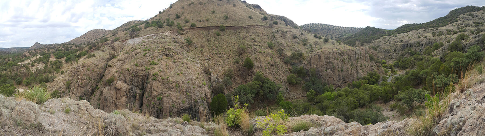

Selene deposit
The southern deposit. This is where the sample came from that an industrial buyer validated through laboratory testing in China for cat litter manufacturing.
- Location
- South of the Babidanchi arroyo
- Status
- Sampled and analysed

Huachinera, Sonora · Mexico
Rancho Babidanchi holds two high-quality perlite deposits on land owned by a single family. Perlite is not a concessible mineral under Mexican law: there is no mining concession in the way, and no third party holds rights over the material.
The resource
Geological studies conclude that both deposits formed in a single volcanic event, from two separate emission points. They sit on the same ranch, divided by the Babidanchi arroyo, and the evidence points to a single perlitic dome with several surface outlets — meaning they may well be connected in the subsurface.
The southern deposit. This is where the sample came from that an industrial buyer validated through laboratory testing in China for cat litter manufacturing.

The northern deposit. It has been drilled across 3.5 hectares on the left bank of the arroyo, in addition to surface geological mapping of the surrounding area.
In 2016, eleven samples from both deposits were expanded at the New Mexico Bureau of Geology & Mineral Resources laboratory, recreating industrial furnace conditions at 704 °C with no preheating. These are the results published in the geological reconnaissance report:
| Parameter | Babidanchi result | What it means |
|---|---|---|
| Apparent expansion index | 20 – 43 × | Ratio of crude ore density to expanded density, on the −50 +100 fraction |
| Expanded density | 1.34 – 2.79 lb/ft³ | Between 21 and 45 kg/m³. A very light product |
| Furnace yield | 84 – 93 % | Share of the material that expands correctly |
| Sinks (unexpanded) | from 0.67 % | Material that does not expand. A low figure indicates purity |
| Loss on ignition (LOI) | 4 – 6 % | Volatile content. Lower LOI, higher expansion |
Sample PB16-29B, from the La Bendición deposit, recorded high brightness, an expanded density of 1.34 lb/ft³ and only 0.67 % sinks: better results than the Socorro perlite the laboratory itself uses as its reference standard.
Vidal Solano, J.R. and Hinojosa García, H.J. (2016). Geological reconnaissance and preliminary economic evaluation report, Tables 3 and 4. Testing: New Mexico Bureau of Geology & Mineral Resources.
The high expansion relates to the near-total absence of phenocrysts in the rock and to the low volatile content. For reference, public sources place commercial perlite expansion between 4 and 20 times its volume: the U.S. Department of Agriculture technical report (USDA, 2024) states "up to 20 times". The Babidanchi index runs higher because it is measured on the fine fraction and against crude ore density, and because the perlite expanded to a very low density — 21–45 kg/m³, typical of cryogenic grade rather than the horticultural grade that range is usually calculated against.
The minimum reserves of 5.2 million tonnes are the sum of two independent studies. Consultoría Geológica GV confirmed 1,244,784.82 m³ of proven reserves through detailed mapping, five boreholes and topographic survey across 3.5 hectares of the northern deposit; at an in-situ density of 2.3 t/m³ that equals 2,863,005 t. Vidal Solano and Hinojosa García estimated a further 2,337,628 t at surface, over separate ground.
The figure is conservative on two counts: it excludes the 926,398.63 m³ of probable reserves reported in the same Consultoría Geológica GV study — a further 2.1 million tonnes — and it excludes everything in the deep volume of the dome.
The 80.7 million tonnes of geological resources come from the thesis by Almazán Holguín and Trelles Monge (1986), which estimated the volume of the complete dome. It is an estimate, not a certified reserve.
No resource report under NI 43-101 or JORC exists yet. Producing that report is part of what is contemplated with the partner or buyer who joins the project.
The mineral
A volcanic glass that, when heated, turns into a white, porous and extraordinarily light material. If you are new to the mineral, start here.
Perlite belongs to the family of amorphous siliceous glasses. It forms when silica-rich lava cools rapidly, trapping small amounts of water inside its vitreous structure. The name comes from its appearance: unexpanded particles often show concentric fractures that resemble pearls.
Crude perlite holds between 2 % and 5 % water. Heated to between 760 °C and 1,100 °C, the silicate structure softens and the trapped water turns to steam, blowing the viscous mass into a froth of glass bubbles. The result occupies many times the original volume, and the change is irreversible.

Between 32 and 240 kg/m³ depending on the degree of expansion. It cuts the weight of mortars, concretes and substrates without sacrificing volume.
Its cellular structure traps air, slowing heat and sound transfer. Used from walls and roofs through to cryogenic tanks.
It is a volcanic glass: it does not burn or add fire load, and it withstands extreme temperatures. Used in passive fire protection.
Chemically non-reactive, pH-neutral and free of pathogens. That is why it is accepted in food, beverage and pharmaceutical filtration.
| Industry | Application |
|---|---|
| Construction | Lightweight aggregate for concrete and mortar, insulating plasters, boards and panels, cavity insulation, fire protection |
| Horticulture and agriculture | Growing media and soil conditioners: aerates the root zone and holds moisture without compacting |
| Industrial filtration | Filter aid for beer, wine, juices, edible oils, syrups, water and pharmaceutical products |
| Cryogenics and industry | Insulation for liquefied gas tanks, foundry moulds, soft abrasives, absorbents |
| Consumer | Cat litter, spill absorbents, lightweight fillers |
The market
This is the figure that explains the project. The United States is the world's fourth-largest perlite producer and still runs a permanent shortfall: around 23 % of the mineral it consumes has to be bought abroad, and 94 % of those purchases cross the Atlantic from Greece.
| Item | 2021 | 2023 | 2025e |
|---|---|---|---|
| Mine production (crude ore) | 879 | 654 | 730 |
| Processed perlite sold or used | 491 | 410 | 460 |
| Imports for consumption | 170 | 140 | 160 |
| Average price (USD per tonne) | $64 | $74 | $78 |
| Net import reliance | 23 % | 23 % | 23 % |
94 %
of United States perlite imports come from Greece, and 3 % from China. They arrive by ship at east coast ports. The rest of the world supplies the remaining 3 %.
Thousand metric tonnes. Mexico does not appear among recorded producers.
Source for all market figures: U.S. Geological Survey, Mineral Commodity Summaries 2026, Perlite chapter. 2025 figures are USGS estimates. Import origin: 2021–2024 average.
Legal standing
This is the most important difference between this project and almost any other mining asset, and it is worth understanding before any figure.
Mexico's Mining Law sets out, in Article 4, a closed list of substances subject to federal concession. Perlite does not appear on that list. Article 5, sections IV and V, further excludes from the Law those rocks intended for construction materials and those extracted through open-pit work — which is precisely how perlite is mined.
The practical consequence: perlite belongs to the owner of the land where it lies. There is no concession that can expire, be cancelled or be disputed, and no third party holds preferential rights over the mineral. There is also no raw material acquisition cost: the ranch is owned by the company's shareholders.
The Federal Delegation of the Ministry of Economy in Hermosillo confirmed this in writing, in response to a formal enquiry filed by our attorney.
Official letter 146.8 / 2016 – 4851 · Directorate General of Mines · Available in the technical file
Location and logistics
The United States imports processed crude perlite mainly from Greece, by ship, into east coast ports. Rancho Babidanchi sits on dry land, a day's truck drive from the border.

| Destination | Distance | Route |
|---|---|---|
| Agua Prieta – Douglas, Arizona border | 218 km | Highway |
| Hermosillo, Sonora | 267 km | Highway · intermodal rail link |
| Ciudad Juárez – El Paso, Texas border | 367 km | Highway · rail freight hub |
| Port of Guaymas, Sonora | 429 km | Highway · maritime outlet |
From the ranch, highways reach Douglas, Tucson and Phoenix in Arizona; and eastward El Paso, Texas, home to one of the largest rail freight hubs in the United States, with spur access for expansion plants across the southeast.
Southward, Hermosillo and the port of Guaymas open the maritime route to markets in Europe, Asia and South America, and make it possible to compete in the same import segment that Greek shipments serve today.
Access to the ranch is via ten kilometres of well-maintained dirt road from the village of Aribabi, which connects to paved highway.
The place
In the Opata language, babi means to drink and danchi to run: the place where the water runs. The name is not incidental.

A perennial spring-fed arroyo runs through the ranch, twelve months a year. The property also holds a national groundwater concession for 5.6 million cubic metres per year — title SON124116, registered with the Public Registry of Water Rights of the National Water Commission — together with abstraction infrastructure already built on site.
The abstraction point lies within the 2631 Río Bavispe aquifer. In its official availability study, the National Water Commission reports for that aquifer a recharge of 29.7 million cubic metres per year against an extraction of 15.2 million, with positive availability and zero deficit.
For a mining project, having running water year-round, licensed and registered, over an aquifer the authority does not declare overexploited, is a condition that rarely comes already settled.


The ranch is a working cattle operation, not empty ground. A project starting here does not start from zero:
Furnished house with solar power, warehouse, corrals, yards, office, water tank and mobile phone signal.
Working internal roads and ten kilometres of well-maintained dirt road to the paved highway. A new seven-kilometre road is planned for tractor-trailer access.
The planned crushing plant site sits less than two kilometres from the deposits and seven from the paved highway.
Open pit. The ore outcrops at surface and is soft: it is ripped and loaded with a bulldozer, with no blasting and no underground work.
Personnel from Aribabi and Huachinera, returning home daily. No camp or personnel logistics costs.
The Sierra Alta region of Sonora, with a permanent National Guard presence at Bavispe and Moctezuma, 62 and 93 kilometres away.
Technical evidence
Four decades of geological work on the same deposit, plus the official documents behind the legal standing and the water rights. Marked items open in a new tab, to read online or download.
Official response from the Federal Delegation in Hermosillo, Directorate of Mines. It transcribes Article 4 of the Mining Law and concludes verbatim that "the substance PERLITE is not subject to the provisions of the Mining Law and its Regulations". This is the document behind the legal section of this page. Recipient's personal details were removed. In Spanish.
2016The most complete study of the project: semi-detailed mapping, petrography of eight sample sets, geochemistry and the expansion testing cited on this page, including the laboratory certificate. Dr Jesús Roberto Vidal Solano and M.Sc. Héctor Jesús Hinojosa García, Department of Geology, Universidad de Sonora. The study's internal budget and personal contact details were removed. In Spanish.
2016Peer-reviewed article published in the Boletín de la Sociedad Geológica Mexicana, volume 68. Hinojosa-Prieto, Vidal-Solano, Kibler and Hinojosa-García. The independent academic validation of the deposit.
2016Exploration report by Consultoría Geológica GV: detailed geological mapping, stratigraphy, structural geology, description of the vitreous rock and an annex with 84 georeferenced field stations. In Spanish.
2015Volumetric calculation by Consultoría Geológica GV based on five exploratory boreholes, mapping and independent topographic survey. This is the source of the proven reserves cited above. In Spanish.
2016Official study by Mexico's National Water Commission. It establishes for the aquifer a recharge of 29.7 million cubic metres per year against an extraction of 15.2 million, with zero deficit. In Spanish.
2009Analysis of eleven rock samples by ICP-AES and ICP-MS: major, trace and rare earth elements, plus loss on ignition. Independent international laboratory.
2016Undergraduate thesis by Óscar Fernando Almazán Holguín and Sergio Alfonso Trelles Monge, Universidad de Sonora. The source of the geological resource estimate for the dome. In Spanish.
1986Both authors of the 1986 thesis ratified their signatures and its contents in writing. Sergio Alfonso Trelles Monge is certified as professional geologist No. 10304 by the American Institute of Professional Geologists.
1988Thesis by Emmanuel Melgarejo Joris, Universidad de Sonora. Geochemical implications and the interdependence of the variables governing expansion. In Spanish.
—
What we are looking for
We are a family company. The asset is ready and documented; what we do not have is the capital to start the operation. We are open to any of these routes, or to a combination.
Purchase of processed crude perlite, with defined volumes and terms. We have already received letters of intent from buyers in Mexico and the United States.
A third party operates and pays rent plus a royalty per tonne extracted. The family retains ownership of the land and the mineral. This is the standard structure for industrial minerals on private land.
The interested party funds drilling and the certified resource report over an agreed term, with the right to purchase at a set price if it chooses to exercise. It solves certification without committing the project in advance.
An operating or financial partner contributing capital and execution capability in exchange for a stake in the project.
Investment to bring extraction and the crushing plant into operation, with committed production as security.
Sale of the complete project — mineral rights and associated infrastructure — or of an equity stake in the company.
Gallery


Contact
If the project interests you, write to us. We share the complete technical file — geological studies, laboratory analysis and legal documentation — under a confidentiality agreement.